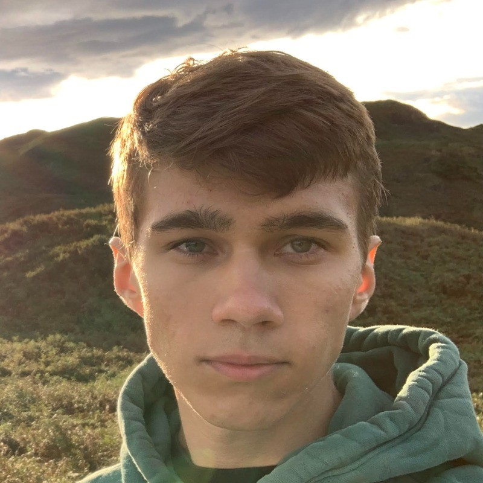

I am a graduate with a strong passion for computer science, fascinated by hardware, software, and the mathematics involved. I have experience in developing backend systems, databases, AI, graphics, embedded systems, web development, and being a project lead and guiding the software development life cycle for a university project. I am always eager to delve into many other fields and expand my knowledge and experience.
Outside of academics and personal programming projects, I enjoy chess, weightlifting, and running which all strengthen my discipline and allow me to always strive for improvement.
(BSc Hons) Computer Science - University of Surrey (2023 - 2026)
Barista at Pistachios In The Park Redhill (May 2021 - July 2021)
Front of House at Vintage Inns (Mitchells & Butlers) (Feb 2024 - Present)
I am fluent in English, Italian, and Russian. My parents are from Kyrgyzstan so I speak Russian at home, but I was born in Italy and spent my childhood there. Near the end of primary school, I moved to England and have lived there since.